Moral Optics
Submit. Serve. Sabotage.

Moral Optics is a satirical game based on corrupt corporations and the everyday working man. Play as Quentin, a fresh grad that took the first job offer he received. Mal Enterprises asks a lot of their employees, so you have to be efficient with your tasks. Water breaks are rare and personal items are limited, but you have to perform well enough to stick around. Maybe there's a way out through breaking down the inner systems, but can someone like you really pull that off?
My Contributions
UI Designer: Prototyped and designed important interface elements in Figma. Discussed feedback with designers and programmers for iteration.
UI Programmer: Implemented my UI designs in Unity using C# and playtested these systems.
UX Designer: Ran weekly UX reviews and playtests on newly added features, gathered feedback to discuss with team members.
Project Details
Platform: Desktop (Itch.io)
Team Size: 6
Project Length: 8 months, September 2024 - April 2025
Tools: Unity, Figma, Github, Trello, Procreate
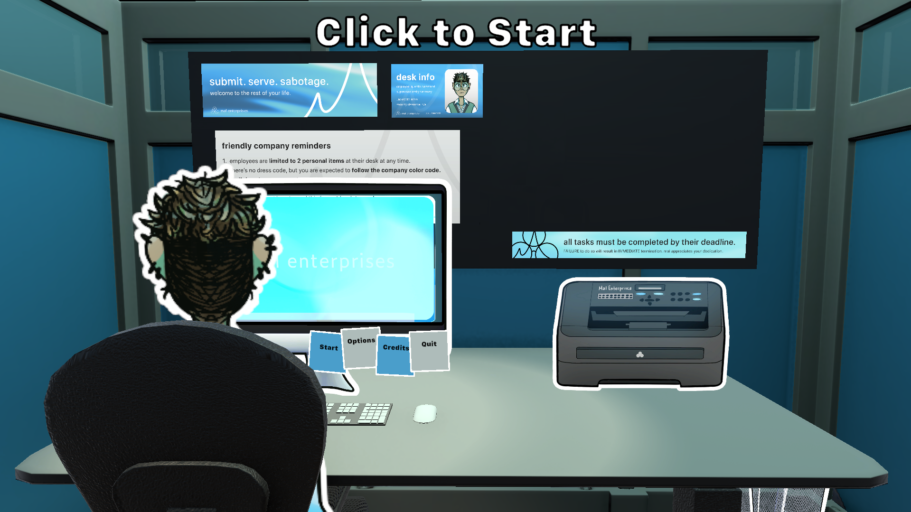
Click here to watch a full playthough!
Task Cards - Feature Deepdive
Task cards needed to provide a lot of information to players
1. Rules - Vague idea of what the player will have to complete.
2. Difficulty - Both for the task at hand and the day as a whole.
3. Speed - How time consuming this task might be.
4. Performance - What their current stats are.
All this information needed to be displayed to the player in a digestible, concise, interesting way that fit with our overall art style. My initial designs contained so much flavor text that it created a lot of friction for users to actually get the information they needed.
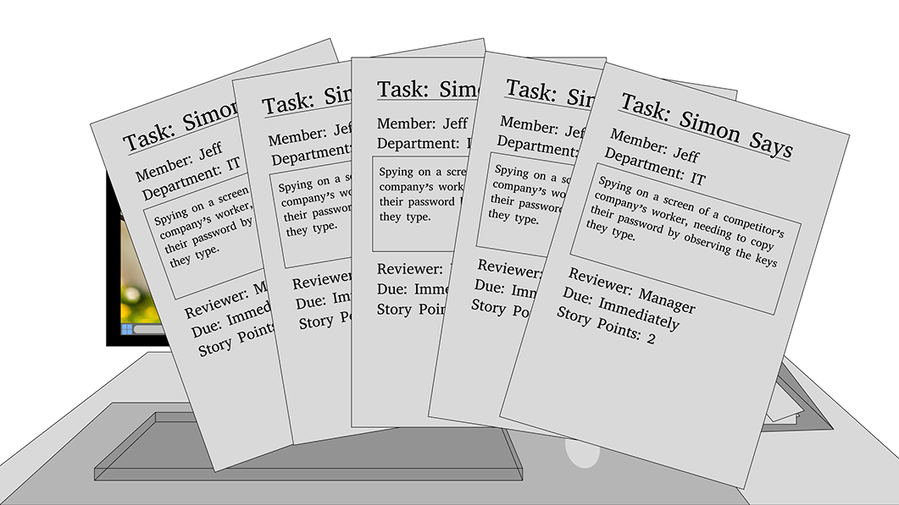
First Iteration - Flavor text central
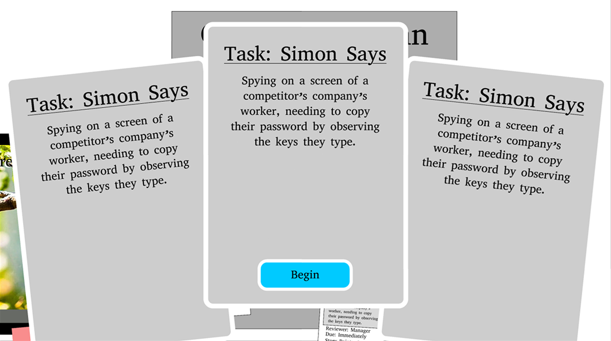
Second Iteration - Only important information & a start button!
At this point, I was happy with how we were displaying the general task information to the player but there were still areas missing: Performance and Grouping. When a task is completed we want the player to still be able to “shuffle” through those cards and know how they've performed for that day so far. Since minigames would be replayed I wanted the player to know what tasks related to what minigames even if they had different titles and flavor texts.
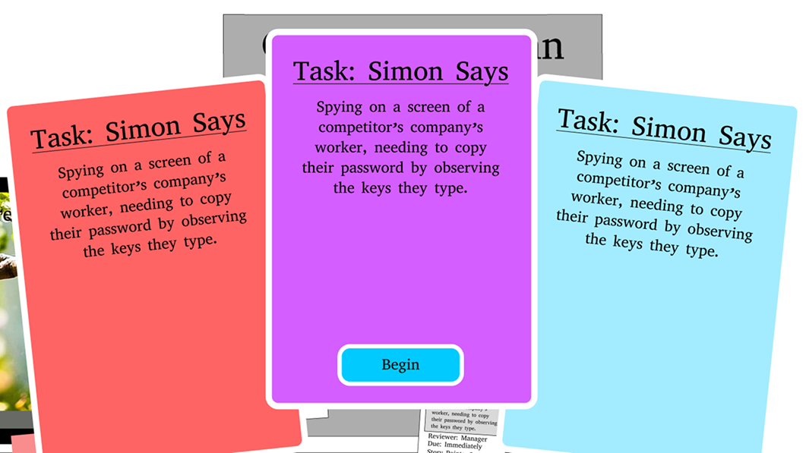
Third Iteration - Too colorful and hard to read!
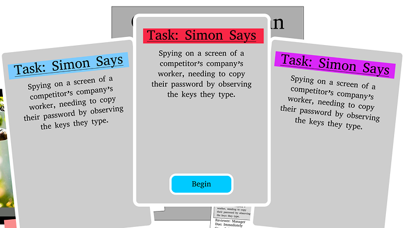
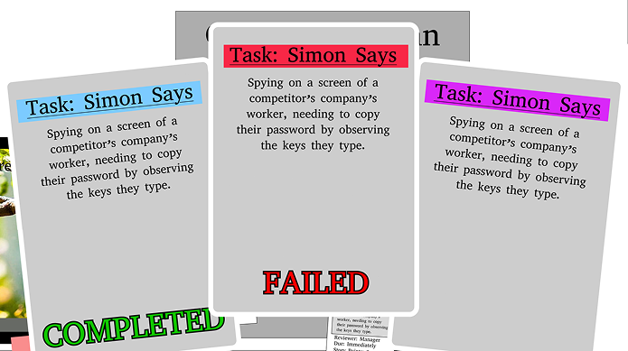
Final Iteration - Simple & readable
This is where I stopped for the sake of finishing the rest of the game, because I was happy with this result and I think it communicates everything we need it to in a relatively clear manner. If I were to continue iterating on these cards I would first start with figuring out a new failed/completed visual. Since failing is a desired outcome I want to make it feel more visually desirable while still conveying that Mal Enterprises looks down on this behavior.
Something like a 'Check' or 'X' in the corners of cards to more lightly display progress. Even adding notes or fun doodles that Quentin did on failed cards to take up some of the unused empty space and add visual interest.
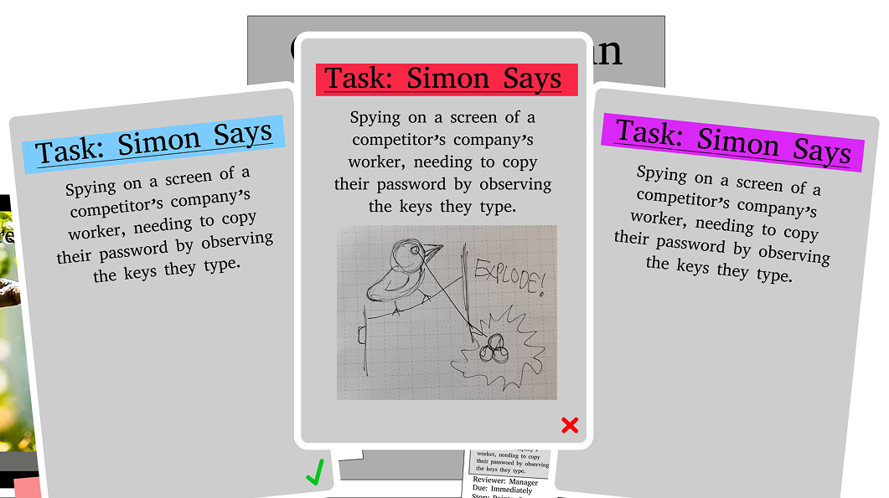
Retrospective Iteration - Pretty fun if I do say so myself
Now that I had the base design for the card itself I could move onto shuffling cards and motion design! At any given time a player would have anywhere between 2-5 cards that they could look through. Since looking at and through your task cards is a pretty core part of gameplay I wanted it to be as visually interesting and clear as I could make it.
For the shuffling interface I came up with a bunch of ideas and had a lot of discussions with our art lead for iterating.
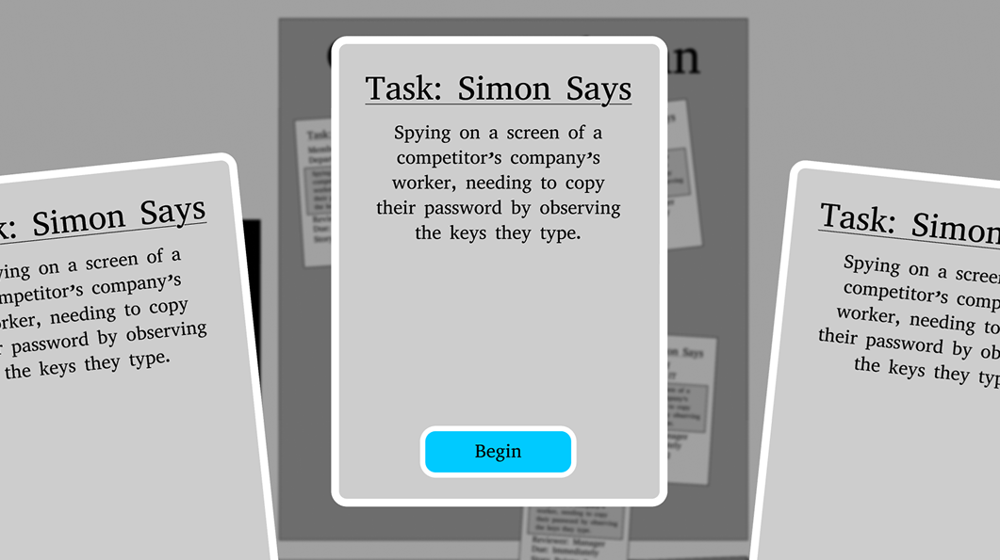
First Iteration - Not clear to player how to interact
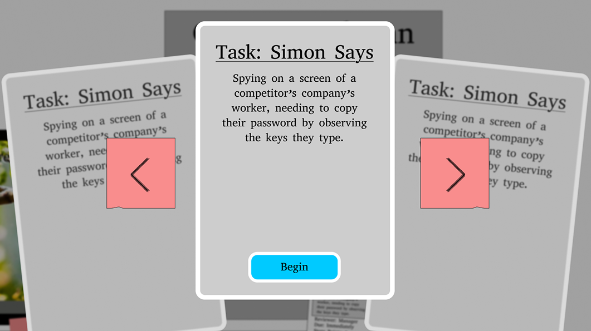
Second Iteration - Clearer, but doesn't fit stylistically for this area of gameplay
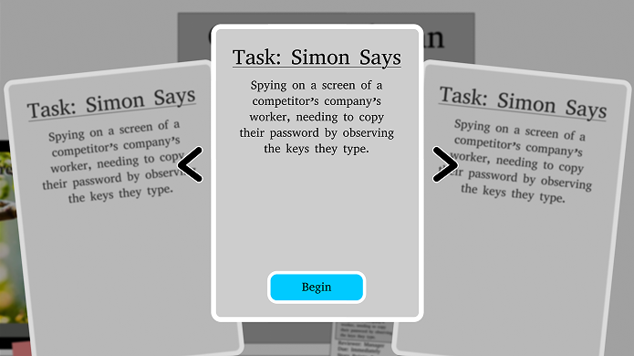
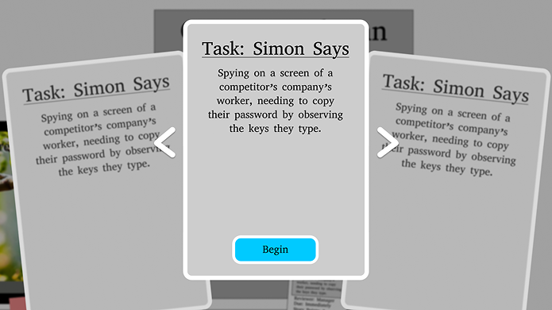
Third Iteration(s) - Fits better but doesn't pop
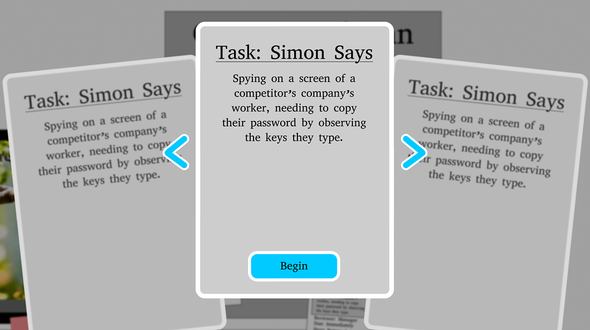
Final Iteration - Uses the interaction color and establishes norms
Through talking with my art lead we were able to identify and establish an interaction color that could be utilized for important buttons, menus, etc. To help illustrate to the player that this element is something you can and should click on.
After this I messed with Unity animations to create the shuffling effect and made sure it worked 1+ cards. This was really fun to do and completely transformed this system into something that felt fun to interact with.
If I were to do these animations again I would look more into how to properly deal with button spam. I didn't have the time to fully figure out how to stop and cut to the end state of the animation in these cases, but I think that would really add the sprinkles on top to these cards.

Final Implementation - The final implementation of the task card interactions and designs!
UX Reviews
As we started finishing base implementations of our minigames I started running weekly UX reviews on the entire game. Taking notes of areas I thought players would need clarity or adjustments. These were incredibly effective in adding to the quality of life of our game as a whole, and we barely had any questions regarding what a player should be doing during a minigame after changes were implemented.
Our initial implementation of Simon Says had tiles that were all the same color, size, texture, etc and also had no count down. Players felt thrown into the task, often missing the first tile to press, and confusing tiles altogether.

First Iteration - Tiles all the same, no count down, could benefit from sound design elements.
To fix this we added in different colors for each tile, a countdown, and different sounds for each tile. This helped players know what to expect and look out for. I think I would still edit the value differences for the pressed tiles, I think the grayed values are too similar to the pressed value that the player can still miss it.

Final Iteration - Different tiles, count down added, buttons beep!
I also looked into areas where players might need adjustments, like our camera movement. In Moral Optics our camera does a lot of zooming in and out of screens, which can really impact players that get easily motion sick. So I thought it would be best to add in a slider that can adjust the zoom speed.

Final Iteration - Camera zoom can be adjusted in options menu
There are still some minigames that need an intensive UX review. These are mainly the ones I didn't have time to get to because they were being programmed last minute. Stonks and Clogged Pipes could use better instructions and a bit of UI love to make them fully fit with the rest of the tasks.
I would also update the messaging system to allow players to go back and read through the previous day's messages and swap between MalBot and their manager. I think this would help players keep track of their progress and also give the manager character more space to be more impactful. Allowing players to fully see a progression in how the manager thinks could also make 'failing' feel better - if they start questioning the completion of their own tasks openly to the player.
Modular UI Assets
For this project I wanted to create a few modular assets so that our designers and programmers could start UI based minigames easily and without my direct help until UX reviews were needed. For this I created a Base Application, Base Application With Sidebar, Options, and Messaging windows that could be added to any new scene with little to no additional work needed. All these Prefabs were created in Unity and are supported by C# scripting for closing the window and messaging functionalities.
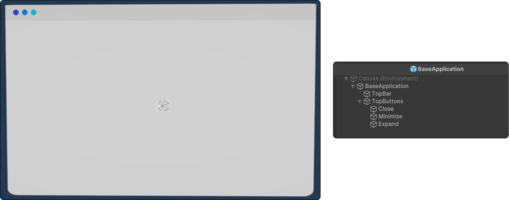
Base Application - prefab and setup
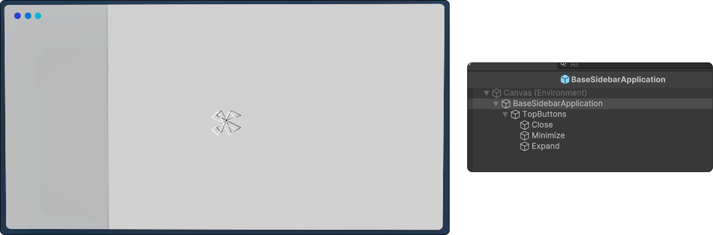
Base Application With Sidebar - prefab and setup
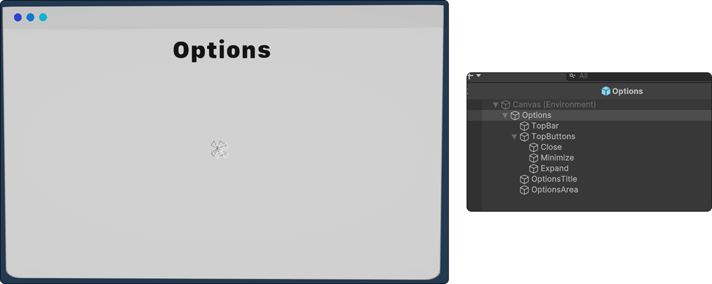
Options - prefab and setup
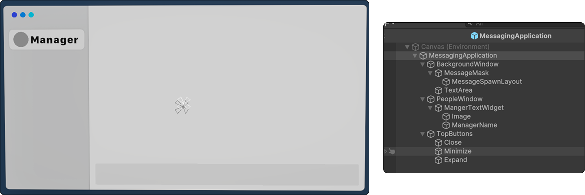
Messaging - prefab and setup
Retrospective
While I am incredibly proud of what my capstone team and I were able to complete within our time frame there are still plenty of things I would love to continue working on for this project.
The most important of which is: making failing feel good. As I discussed in a few other sections this is my number one interest and priority for this project if I were to move forward working on it. The team has discussed adding narrative elements to support this, making the manager start second guessing their own workflow, adding in additional message's from Quentin's wife supporting him, and possibly showing signs of degradation within the company as the player continues riding the thin line of sabotaging them. I've also thought up a few possible UI adjustments, discussed in task card section, to add in visual interest and reward failure of tasks.